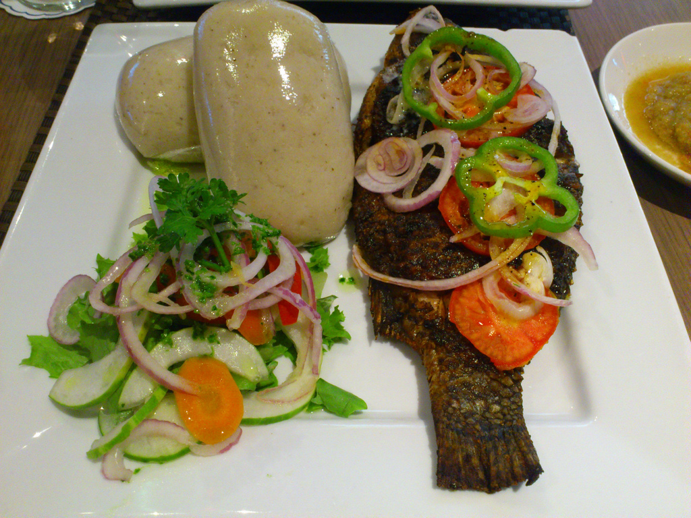
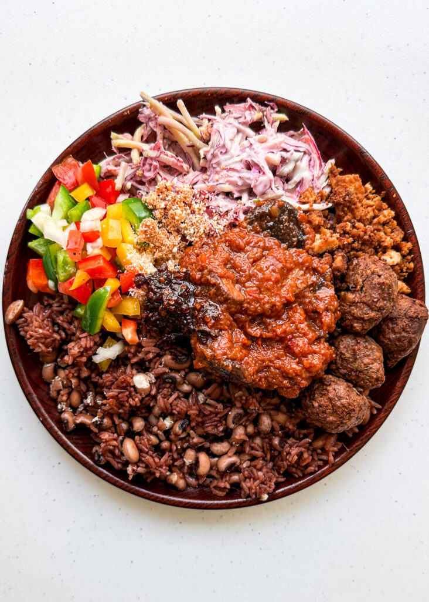
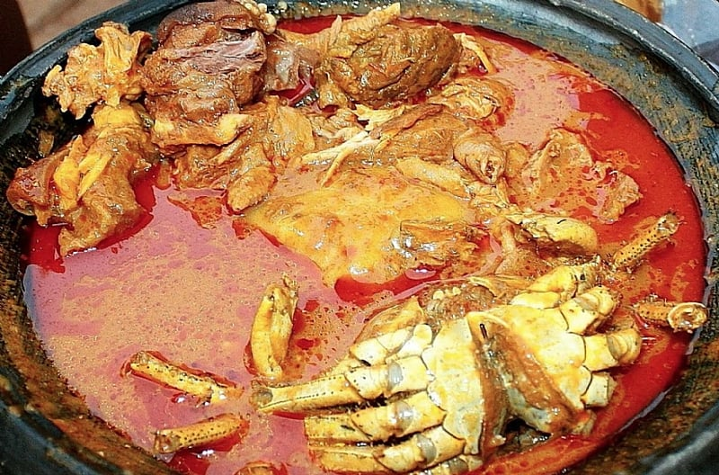
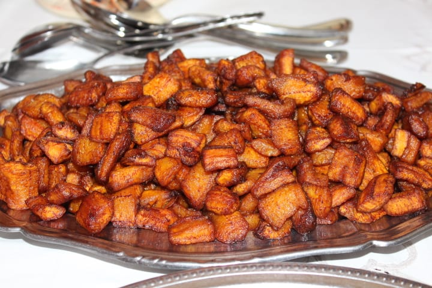
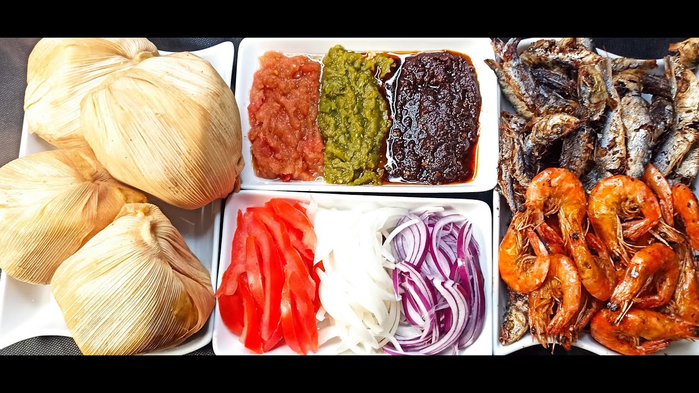

Food in Ghana
Jollof Rice

Jollof rice is a beloved West African dish, and in Ghana, it's a staple at parties, gatherings, and everyday meals. The dish is made by cooking rice in a rich tomato sauce infused with onions, bell peppers, garlic, and a blend of local spices. The vibrant orange-red colour and slightly smoky flavour are characteristic of Ghanaian Jollof, which is often served with grilled chicken, fried plantains, or fish. Each region in Ghana might have its own twist on the recipe, but the essence remains a hearty, flavour-packed meal that’s sure to satisfy
Banku and Tilapia

Banku and Tilapia is a quintessential Ghanaian dish that combines the tangy taste of banku with the smoky, savoury flavour of grilled tilapia. Banku, a fermented dough made from a mixture of corn and cassava, is cooked into a smooth, stretchy texture and has a slightly sour taste due to the fermentation process. It’s typically served with tilapia, which is marinated with spices and then grilled to perfection, offering a crispy skin and tender, juicy flesh.
The dish is often accompanied by a spicy pepper sauce or shito, a fiery black pepper sauce that adds an extra kick to the meal. The combination of the soft, tangy banku with the rich, smoky tilapia and spicy sauces makes this dish a favourite across Ghana. Eating Banku and Tilapia is traditionally done by hand, with each bite offering a harmonious blend of textures and flavours that reflect the vibrancy of Ghanaian cuisine.
Waakye

Waakye is a traditional Ghanaian dish made from rice and black-eyed peas or beans, cooked together with dried millet leaves, which give the dish its distinctive brown colour. It's a popular breakfast or lunch option, often served with a variety of sides, including boiled eggs, spaghetti, fried plantains, and meat or fish. A generous dollop of shito, a spicy black pepper sauce, and a splash of tomato stew complete the meal. Waakye is not just a dish but an experience, typically enjoyed from street food vendors or local eateries across Ghana.
FuFu

Fufu is a starchy, dough-like food made by pounding boiled cassava, yams, or plantains into a smooth, stretchy consistency. It’s a staple across West Africa, but in Ghana, it's often paired with a variety of hearty soups, such as light soup, groundnut (peanut) soup, or palm nut soup. Fufu is traditionally eaten by hand, with small portions dipped into the accompanying soup. The process of making fufu is labour-intensive, involving constant pounding until the right texture is achieved, but the result is a comforting and filling meal central to Ghanaian culinary tradition.
kelewele

Kelewele is a popular Ghanaian street food made from ripe plantains cut into cubes or slices, marinated in a blend of spices, and then deep-fried to a golden brown. The marinade typically includes ginger, garlic, chilli powder, and salt, giving the plantains a sweet, spicy, and slightly tangy flavour. Kelewele is enjoyed as a snack, side dish, or even a main course when paired with peanuts or grilled meat. Its crispy exterior and soft, caramelised interior make it a favourite among locals and tourists alike, often found at roadside vendors or served at special occasions.
kenkey

Kenkey is a traditional Ghanaian dish made from fermented corn dough, which is wrapped in corn husks and steamed. The fermentation process gives kenkey its distinctive sour taste, and it has a dense, slightly crumbly texture. It is a staple among the Ga people of the Greater Accra Region and is commonly served with fried fish, pepper sauce, and shito, a spicy black pepper sauce. Kenkey is a versatile dish, enjoyed both as a casual meal and at celebratory events. Its tangy flavour pairs perfectly with the spiciness of the accompanying sauces, making it a beloved dish across Ghana.